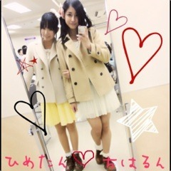

| 2012/04 01 Sun | JC最後の握手会♪♪(O・ω・)ノ)) |
＼個別握手会／
いん 東京ーー♡♡♡
からのー
＼ＪＣ卒業／
いん ３月31日ーー♡♡♡
と、ふたつのことがあった日だったにゅ！

まずは握手会のことから語ろうかしら\(//∇//)\
今回は名古屋とは全く雰囲気が違くて、
人が多かった！
びっくりっ！わおわお
来てくれた方ありがとう♡♡♡
コメントでよく見る人とかいると
ほんとテンション上がる！♡
あー♡
会えたー♡♡！
ってなるからみんな会いに来てな？♡
やっぱり握手会だいすきだわー！(o^ω^o)ノ

みんなだーいーすーきーーー！
って叫んだら近所迷惑かしら。(｡-_-｡)
でも叫ぼうかしら。(｡-_-｡)
っっだぁーーいぃいーーーすぅうぅうーーーーきぃぃぃぃいぃーーーーー
叫んじった♡
てへぺろぺろぺろ

今日の私服どーーーーん

撮影は噂のツンデレひなかわご！
いま流行りのシャーベットカラーの、みんとちゃん×ほわいとちゃんで
女の子女の子してみたー

リボンがポイントっ
ひめたんに今日の服似てたのっ

ひめたんリボンでしょー
えりつきニットでしょー
短いチュールスカートでしょー
茶色いショートブーツでしょー
白いふりふり靴下でしょー
トレンチコートまで！
全部が似てたにゅ
双子ちゃん意識ーー♡
とかゅって偶然。
きらりーーーん
続いて
JC
卒業について！
うやあ
じ
日付変わったから今日からもう
JＫ
になっちゃったよ！。
日付変わるちょっとまえからずっと
いくちゃん、ひめたんと一斉送信でメールしてるの(o^ω^o)♡♡
JC卒業の感動を共に味わうしか！
ってことでー♡
わらわら
くだらないことでずっとメール続くからね、
たまにこんなんとかあるよ！
ってかいまさっきだよ\(//∇//)\
ひ いえあああありくい

ち あはあはあははははあはは
おぉー
さすがうちらっ

これも秘密で公開してるから怒られるかなぁーーてへぺろ
あしゅには
ちゃんちーなに載っけてんだよお！
あたしkrとか書いてすっごいばかみたいぢゃん！
......いやいや。
あなたばかでしょ？♡♡
(あたたかい目)
んきゃーーー
にぎやかだわーーーーい＼(^ω^)／
JKになってもよろしくね？
巻き髪アップ！kr
でわっ♡♡♡
今日来てくれた方々ほんとにありがとうございます！
だいすきちゅっ
ばいるんっ
ちはるんっ
♪♪(O・ω・)ノ))
コメント(53)
2012/04/01 01:00